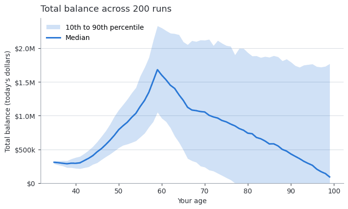
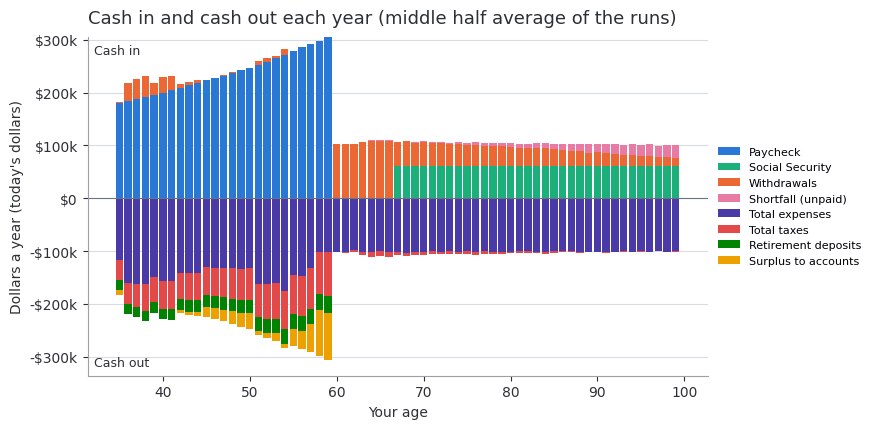
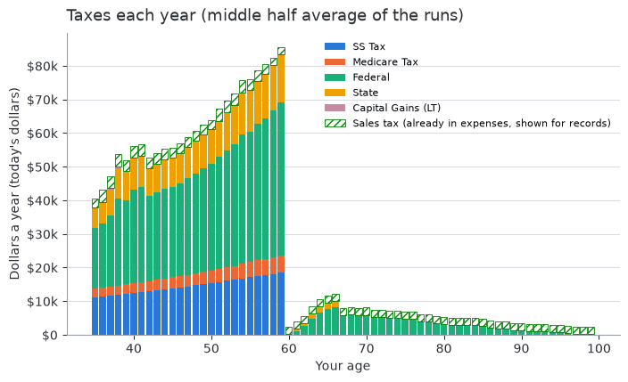
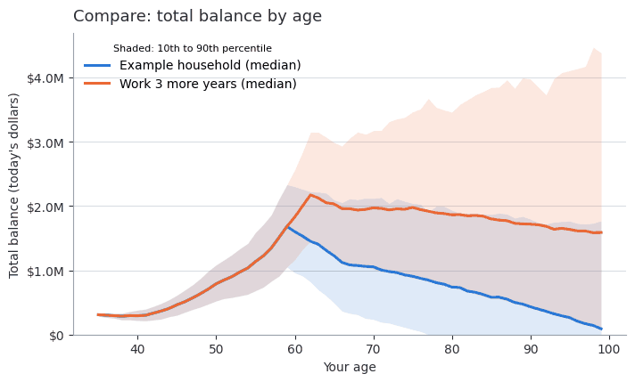

Sample results
For readers who know the app’s tabs and want to see typical results: what the
results look like, drawn from the real model for the example
household (the fictional figures the app opens with). The plots are made by
docs/generate_sample_plots.py with a fixed seed and a fixed number of
runs, so they come out the same each time; its --check mode re-runs the
model and fails when the numbers behind a plot change. They are pictures for
this guide; the app draws its own charts from the same results. Your own figures will differ.
How to read them: each chart is in today’s value (the example household has Inflation-adjusted dollars off), and a band shows the spread across the Monte Carlo runs. The app explains each chart the app shows, and Charts in Model rules by group says what each one counts.
Wealth over time


Total balance by year: the median run and the spread of the runs around it.
The line is the middle run; the band holds most of the others. A band that widens with time is normal: the further ahead, the more the returns can differ.
Income and spending


Income and spending by year for the example household.
In the example both people stop work at 60 and claim Social Security at 67; in the years between, spending is paid from the accounts.
Taxes by year


Taxes by kind and year for the example household. The hatched bar on top is the sales tax already inside the spending, shown for records and never added to the taxes.
Taxes usually fall when pay stops and can rise again once Social Security and required minimum distributions begin. deep dive taxes explains how each year is taxed.
Comparing two scenarios


Two scenarios compared on the same random draws.
Both run on the same draws, so the difference comes from the setting that differs, not from luck (Compare).
Optimizer before and after

The current settings against the best settings the optimizer found.
The optimizer is a search on the model, not advice; a small gain may not hold up on fresh draws (Finding the best settings and deep dive optimizer).